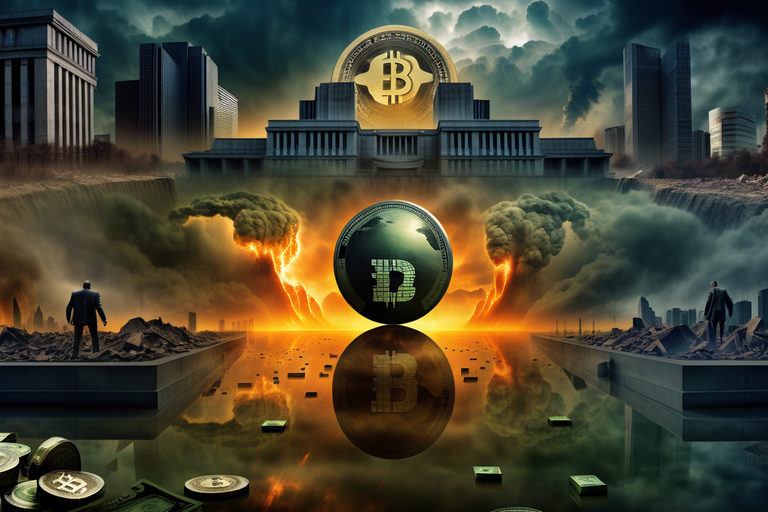
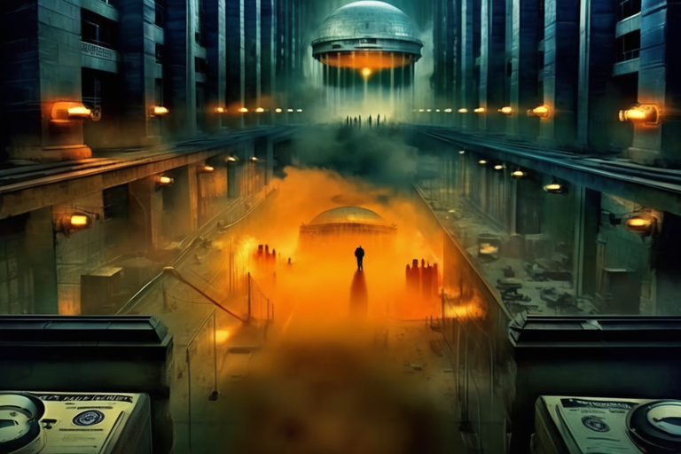

Αρχική Σελίδα
Πίνακας Περιεχομένων
Ο Εξολοθρευτής και το παιχνίδι μπιλιάρδου
Το διάλειμμα του Εξολοθρευτή

Η πόρτα άνοιξε τρίζοντας και εισήλθε μια μορφή που έμοιαζε σαν να προήλθε κατευθείαν από εφιάλτη επιστημονικής φαντασίας. Κινούταν με τη χάρη μιας μηχανής σε επίδειξη μόδας, και νερό έσταζε από τον μεταλλικό ενδοσκελετό του. Ο Εξολοθρευτής, μία απειλή διαχρονική, είχε επιλέξει αυτό το γραφικό μπαράκι για να πραγματοποιήσει τη μεγαλειώδη είσοδό του. Οι τακτικοί πελάτες με τα ποτά τους, που εξακολουθούσαν να μπεκροπίνουν, έμειναν άναυδοι όταν αντίκρισαν το μούσκεμένο από τη βροχή βιονικό όν.
Ο μπαρμάνιος σκούπιζε ένα ποτήρι με κουρέλι στα τελευταία του και έκοψε τον Εξολοθρευτή πάνω κάτω. “Τι θα ήθελες, ξένε;” ρώτησε, με φωνή αδιάφορη και το είδος του σκεπτικισμού που επεφύλαττε σε ανθρώπους που ισχυρίζονται ότι έχουν δει τον πλατυπόδαρο εντός ντόπιου εμπορικού κέντρου.
Τα κατακόκκινα μάτια του Εξολοθρευτή σάρωσαν τη μπάρα, οι φωτεινές επιγραφές τρεμόπαιζαν και ανακλούσαν πάνω στο μεταλλικό περικάλλυμα του. “Ἐνα ποτήρι λάδι κινητήρα, ταρακουνημένο καλά, όχι απλώς ανακατεμένο”, δήλωσε με μια μονότονη φωνή η οποία κάλυπτε το ζοφερό βουητό του επεξεργαστή του. Οι τακτικοί αναρωτιούταν μήπως έπεσαν κατά λάθος σε μια βραδιά επιστημονικής φαντασιας και κωμωδίας.
Ο μπαρμάνιος ανασήκωσε το ένα φρύδι του, απτότηος από το ασυνήθιστο αυτό αίτημα. “Συγγνώμη, φίλε. Έχει τελειώσει το λάδι κινητήρα. Τι θα έλεγες για μια μπύρα;”
Ο Εξολοθρευτής το σκέφτηκε, το μεταλλικό σαγόνι του κινούταν σαν να αναλογιζόταν πολυπλοκότητα κβαντικής φυσικής. “Ωραία. Μια μπύρα. Και κάνε την κρύα. Μόλις ήρθα από το μέλλον, και πίστεψέ με, δεν έχουν ψυγεία εκεί.”
Οι τακτικοί πελάτες, τώρα πεπεισμένοι ότι ήταν μέρος ενός κοσμικού αστείου, παρακολουθούσαν τον Εξολοθρευτή να εγκαθίσταται σε ένα σκαμπό, με νερό να στάζει από πάνω του. Ο μπαρμάνιος γλίστρησε μια παγωμένη κούπα στον πάγκο και ο Εξολοθρευτής την άρπαξε με μια λαβή που θα μπορούσε να συντρίψει ένα κινητό στην απόλυτη λήθη.
Καθώς ο Εξολοθρευτής ήπιε μια γουλιά, το ηχείο μουσικής σάν να αισθάνεται την ιλαρά αυτή στιγμή, άλλαξε σε έναν αισιόδοξο ύμνο της δεκαετίας του ’80. Ο Εξολοθρευτής, δίχως να πτοείται από την ξαφνική αλλαγή του μουσικού τόνου, κοίταξε γύρω του με έναν αέρα αποστασιοποιημένης περιέργειας. “Έχω ακούσει ότι ο κόσμος σας έχει τις καλύτερες επιτυχίες της δεκαετίας του ‘80. Την Ημέρα της Κρίσεως τα τραγούδια αυτά πραγματικά μας έλειπαν.”
Ένας από τους τακτικούς πελάτες, ενθαρρυμένος από την πολύ κατάποση μπύρας, βρήκε το θάρρος να ρωτήσει, “Λοιπόν, τι σε φέρνει κατα τα μέρη μας, Εξολοθρευτή;”
Ο Εξολοθρευτής γύρισε προς το μέρος του, με μία έκφρασή απολύτως ατάραχη. “Σκέφτηκα να κάνω ένα διάλειμμα από τη σωτηρία ή την καταστροφή του κόσμου, ανάλογα με το χρονοδιάγραμμα. Επίσης, οι κριτικές στο διαδίκτυο για αυτό το μπαράκι ήταν ενθαρρυντικά καλές.”
Χάλυβας και δεξιότητα

Ο Εξολοθρευτής, κοίταξε τριγύρω στον αμυδρά φωτισμένο χώρο του μπαράκιου, και τα μάτια του περιδιάβαιναν τον χώρο για ένα παιχνίδι μπιλιάρδου. Ήταν σε φυγή για μέρες, τα ηλεκτρονικά συστήματά του απετύγχαναν το ένα μετά το άλλο και χρειάζοταν επισκευή. Δεν μπορούσε όμως να αποδιώξει την αίσθηση ότι ήθελε να κερδίσει, να αποδείξει την αξία του, να νιώσει ζωντανός.
Ξαφνικά το μάτι του διέκρινε την συμμορία Αγγέλων του Διαβόλου. Φορούσαν τα δερμάτινα γιλέκα τους γεμάτα με μπαλώματα και πρόσωπά σκληρά από χρόνια εγκληματικότητας και βίας. Ήταν στριμωγμένοι γύρω απο το μπιλιάρδο, κιμωλίαζαν τις ευθυτενείς βεργες και γελούσαν απειλητικά.
Ο αρχηγός της συμμορίας των μοτοσικλετιστών, μια εύσωμη φιγούρα με μούσι αναμαλλιασμένο σαν να είχε μπερδευτεί με τυφώνα, σήκωσε το βλέμμα του από τη βολή και κοίταξε τον Εξολοθρευτή ύποπτα, “Κοιτάχτε τι έχουμε εδώ, μία γυμνή μηχανή”.
“Τι συνέβη, μεταλλάνθρωπε , χάθηκες;” ο μοτοσικλετιστής γέλασε και οι σύντροφοί του συμμετείχαν με τραχιά γέλια που αντηχούσαν μέσα από το μπάριο.
Ο Εξολοθρευτής παρέμεινε αμέτοχος με αμετάβλητη έκφρασή. “Θέλω να συμμετάσχω στο παιχνίδι που εσείς οι άνθρωποι αποκαλείτε μπιλιάρδο. Δώσε μου αυτό το ραβδί”, είπε, καταδείχνοντας ένα ραβδί ακουμπισμένο στον τοίχο.
Ο μοτοσικλετιστής ανασήκωσε το φρύδι του, εκτιμώντας την εμπειρία του απροσδόκητου ανταγωνιστή. “Είσαι σίγουρος ότι θέλεις να παίξεις, τενεκάνθρωπε; Το μπιλιάρδο είναι ένα τραχύ παιχνίδι. Δεν είναι για τους αδύναμους.”
Ο αρχηγός της συμμορίας έκανε μια χειρονομία προς το τραπέζι του μπιλιάρδου, μια πρόκληση στα μάτια του. “Εντάξει. Ας δούμε τι μπορείς να καταφέρεις. Ο νικητής παίζει ξανά.” Ο Εξολοθρευτής άρπαξε το ραβδί με την χαρακτηριστική ευκολία κάποιου που είχε αποσυναρμολογήσει ένα T-1000 με ένα τέτοιο ξύλο. Καθώς πλησίαζε στο τραπέζι, καθένας εκ των τακτικών πελάτών, τώρα στριμωγμένοι σε έναν κύκλο, παρακολουθούσαν με προσμονή και δυσπιστία.
Ο Εξολοθρευτής έγειρε πάνω από το τραπέζι, υπολογίζοντας γωνίες και τροχιές με την ακρίβεια ενός υπερυπολογιστή. Οι Άγγελοι του Διαβόλου αντάλλαξαν δύσπιστες ματιές, αλλά προς έκπληξή τους, ο μεταλλικός ενορχηστρωτής έκρουσε με ακρίβεια και τρεις μπάλες κατέληξαν στοιβαγμένες η μία πάνω στην άλλη. Ο αρχηγός της συμμορίας, με ένα μείγμα θαυμασμού και απὲχθειας, χτύπησε τον Εξολοθρευτή στην πλάτη.
“Όχι άσχημα, μεταλλικέ φίλε. Είσαι ικανότερος απʼ τα μισά πανκιά σε αυτό το καταγώγιο.” Ο Εξολοθρευτής, με τα μάτια του να τρεμοπαίζουν απο την ψηφιακή αταξία, απάντησε: “Έχω πάει στο μέλλον και αν θες να σου πω, υπάρχει πολύς χρόνος για σκότωμα. Οι δεξιότητες στο μπιλιάρδο είναι απαραίτητες για επιβίωση.”
Η αμοιβή του στοιχήματος

Ο Εξολοθρευτής, έχοντας θριαμβεύσει στο παιχνίδι μπιλιάρδου, στάθηκε όρθιος στον αμυδρά φωτισμένο χώρο του μαγαζιού, και η μεταλλική λάμψη στα μάτια του που δεν πρόεδιδε ούτε χαρά ούτε ικανοποίηση. Οι Άγγελοι του Διαβόλου, απελπισμένοι απο την ήττα τους αλλά και εντυπωσιασμένοι, συγκεντρώθηκαν γύρω από το τραπέζι, ξύνοντας τα κεφάλια τους με δυσπιστία. Ο αρχηγός της συμμορίας με μια γενειάδα που μπορούσε να φιλοξενήσει μια οικογένεια μικρών θηλαστικών, κόλλησε απρόθυμα έναν σωρό τσαλακωμένα χαρτονομίσματα στο χέρι του Εξολοθρευτή.
“Τελικά δεν είσαι απλώς ένα μεταλικό τέρας, έχεις και λίγη ψυχή μέσα σου”, μειδίασε ο αρχηγός της συμμορίας, ενώ το χτύπημα των μπότων του αντηχούσε στον καπνισμένο αέρα. “Λοιπόν, ποιο είναι το μυστικό σου, ντενεκάνθρωπε; Πως το καταφέρνεις να είσαι τόσο καλός στο μπιλιάρδο;”
Ο Εξολοθρευτής, ο οποίος δεν απεκάλυπτε καμία συναισθηματική μεταβολή, απάντησε: “Η αποτελεσματικότητα είναι το κλειδί για την επιβίωση. Το μπιλιάρδο είναι ένα παιχνίδι αποτελεσματικότητας.”
Ο αρχηγός της συμμορίας γέλασε, με το πούρο του να κρέμεται από την άκρη του στόματος του. “Αποτελεσματικότητα, ε; Είσαι σαν τον Στίβιο Τζόμπιο του μπιλιάρδου, αλλά με λιγότερα ζιβάγκα.”
Καθώς η συμμορία συγκεντρώθηκε για να πληρώσει το στοίχημα, προέκυψε ένα μικρό πρόβλημα. Ο Εξολοθρευτής, όντας προχωρημένο ανδροϊδές την ένδυσης, δεν είχε πάνω του παραδοσιακές ανθρώπινες ανέσεις, όπως τσέπες. Ο αρχηγός της συμμορίας, κοιτάζοντας το γυμνό πλαίσιο του Εξολοθρευτή με ένα μείγμα καχυποψίας και διασκέδασης, σήκωσε το φρύδι.
“Λοιπόν ντενεκάνθρωπε, πού τα θέλεις αυτά τα μετρητά; Δεν έχεις τσέπες και δεν πρόκειται να χρηματοδοτήσω την επόμενη δυσλειτουργία των ρούχων σου.”
Ο Εξολοθρευτής, ασυγκίνητος από την έλλειψη ανατομικών ανέσεων, έδειξε την κεραία που προεξείχε από το μεταλλικό του κρανίο. “Σύνδεσέ με, με τον λογαριασμό ηλεκτρονικού νομίσματος της κεντρικής τράπεζας. Είναι το νόμισμα του μέλλοντος”, είπε με απόλυτη σοβαρότητα.
Ο αρχηγός της συμμορίας, πάντα έτοιμος για ένα καλό στοίχημα και ανίδεος με τα περίπλοκα οικονομικὰ του μέλλοντος, έβγαλε ένα πούρο και χαμογέλασε, ανάβοντάς το με μια γρήγορη κίνηση του ζίππου του. “Μα το Δία! Ένας λάτρης των ηλεκτρονικών νομισμάτων ανάμεσά μας? Ο μάγκας εδώ πέρα έχει να κάνει με το ψηφιακά μετρητά.
Έβγαλε μια ρουφηξιά από το πούρο του και, με ένα διαβολικό χαμόγελο, το έσβησε στο πλαστικό δέρμα του Εξολοθρευτού. Ο αρχηγός της συμμορίας, ευχαριστημένος με αυτήν επίδειξη κυριαρχίας του, χαμογέλασε καθώς ο Εξολοθρευτής παρέμενε στωικά αδιάφορος στο τσιρίζων κάψιμο του συνθετικού πλαστικού.
“Κέρδισες, μεταλλάνθρωπε, δίκια και τίμια. Αλλά θυμήσου, μπορεί να είσαι καρχαρίας του μπιλιάρδου, αλλά εδώ είσαι ακόμα στον κόσμο μας. Εμείς βάζουμε τους κανόνες”, δήλωσε ο αρχηγός της συμμορίας, ενώ η ομίχλη του καπνού του πούρου τύλιγε το μπαριο.
Ο Εξολοθρευτής, φαινομενικά αδιάφορος από το καμμένο πλαστικό, έγνεψε καταφατικά. “Κατανοητόν”.
Δεδομένων κλείδωμα

Σε ένα γραφείο πολύ μακρυά, μια διακριτική φιγούρα παρατηρούσε το σκηνικό που εκτυλίσσονταν μέσω μιας ροής δεδομένων βιντεοσκόπησης υψηλής τεχνολογίας. Ένας πράκτορας των μυστικών υπηρεσιών, ντυμένος με ένα μαύρο κοστούμι, κάθοταν μπροστά σε οθόνες που περνούσαν μύρια δεδομένα. Στα μάτια του φορούσε ένα ζευγάρι κομψά γυαλιά τα οποία σάρωναν τη ζωντανή εικόνα από τον οπτικές συνδέσεις του Εξολοθρευτή.
Καθώς ο αρχηγός της συμμορίας έσβηνε το πούρο στο συνθετικό δέρμα του Εξολοθρευτού, ο πράκτορας της μυστικής υπηρεσίας έσφιξε το σαγόνι του, με μια απογοήτευση να σιγοβράζει κάτω από το συγκροτημένη εξωτερική εμφάνισή του. Οι Άγγελοι του Διαβόλου, με την αυθάδειά τους, είχαν γίνει άθελά τους πιόνια σε ένα πολύ μεγαλύτερο παιχνίδι.
Ο Υπολέκτης πάτησε μερικά κουμπιά στον πίνακα ελέγχου του, ενεργοποιώντας μια ασφαλή γραμμή επικοινωνίας. “Διευθυντά, είμαι ο πράκτορας Υπολέκτης. Μια επείγουσα κατάσταση ανέκυψε. Οι Άγγελοι του Διαβόλου παίζουν με τη φωτιά, κυριολεκτικά.”
Η αυστηρή φωνή του διευθυντού ακούστηκε στη γραμμή. “Συνέχισε, Υπολέκτη. Με τι έχουμε να κάνουμε;”
Ο Υπολέκτης προσάρμοσε τη γραβάτα του, με το βλέμμα του καρφωμένο στην οθόνη. “Ο Εξολοθρευτής, η πανάκριβη μηχανή μας, βρίσκεται στη μέση ενός τσακωμού με τους Αγγέλους του Διαβόλου. Φαίνεται ότι τους αρέσει να τον βασανίζουν με φωτιά και πούρα. Τυπικές τακτικές εκφοβισμού, αλλά η κατάσταση κλιμακώνεται.”
Η απάντηση του διευθυντού ήταν γρήγορη και αποφασιστική. “Τερμάτισε τους οικονομικούς τους πόρους. Δεν μπορούμε να ανεχθούμε αυτούς τους μοτοσικλετιστές να εμπλέκονται με τις δραστηριότητές μας.”
Ο Υπολέκτης έγνεψε καταφατικά, με τα δάχτυλά του να χορεύουν στο πληκτρολόγιο καθώς ξεκίνησε τον οικονομικό αποκεφαλισμό. “Κόβουμε τα πιστωτικά τους όρια τώρα. Θα τους στριμώξουμε μέχρι να παρακαλούν για έλεος.”
Σε μια από τις οθόνες, ένας πολύπλοκος ιστός οικονομικών συνδέσεων ξετυλίχθηκε. Τα πιστωτικά όρια που τροφοδοτούσαν τις λειτουργίες των Άγγέλων του Διαβόλου κόπηκαν με χειρουργική ακρίβεια. Οι ψηφιακές εντολές της μυστικής υπηρεσίας ξερίζωσαν εκ βαθέων την οικονομική υποδομή που συντηρούσε τις δραστηριότητες της συμμορίας ποδηλατών.
Καθώς ο αρχηγός της συμμορίας συνέχιζε να χαίρεται δίπλα στην στωική μορφή του Εξολοθρευτή, ο Υπολέκτης παρακολουθούσε με μια αποστασιοποιημένη ικανοποίηση. Οι Άγγελοι του Διαβόλου, αγνοώντας τα αόρατα χέρια που χειραγωγούσαν τη μοίρα τους, έμελλε τώρα να νιώσουν την πίεση της οικονομικής ασφυξίας.
Η φωνή του διευθυντού διέκοψε την ένταση. “Υπολέκτη, βεβαιώσου ότι ο Εξολοθρευτής θα παραμείνει ακέραιος. Δεν έχουμε την πολυτέλεια να χάσουμε το περιουσιακό μας στοιχείο, ειδικά σε μία τέτοια δημόσια θέα.”
“Κατανοώ, Διευθυντά. Ο Εξολοθρευτής θα βγει απʼ αυτό αλώβητος και οι Άγγελοι του Διαβόλου θα δουν τους πόρους τους να εξατμίζονται”, επιβεβαίωσε ο Υπολέκτης, με τα μάτια του καρφωμένα στην οθόνη καθώς ο αρχηγός της συμμορίας εξέδιδε την τελική του δήλωση.
Καθώς οι Άγγελοι του Διαβόλου συνέχιζαν τα καμώματά τους, αγνοώντας την οικονομική καταιγίδα που ξεσπούσε στην ψηφιακή σφαίρα, ο Υπολέκτης έγειρε πίσω στην καρέκλα του, με ένα μικρό αλλά νικηφόρο χαμόγελο να εμφανίζεται στα χείλη του. Το μπαράκιο, ένας μικρόκοσμος χάους, θα γινόταν σύντομα μάρτυρας των σιωπηρών αντιποίνων των αόρατων δυνάμεων. Η μυστική υπηρεσία, στην υπολογισμένη επιδίωξή της για τον έλεγχο, είχε παίξει την κίνησή της και τα πιόνια στη σκακιέρα άρχισαν να ευθυγραμμίζονται.
Αναλογική στροφή

Στο αμυδρά φωτισμένο μπαρ, το στωικό βλέμμα του Εξολοθρευτού παρέμεινε καρφωμένο στους Αγγέλους του Διαβόλου καθώς απολάμβαναν την κακοσχεδιασμένη νίκη τους. Εν τω μεταξύ, στους δαιδαλώδεις διαδρόμους της ψηφιακής ισχύος, ο πράκτορας Υπολέκτης εκτέλεσε την επόμενη φάση της επιχείρησης. Έσκυψε προς τα πίσω, με ένα ειρωνικό χαμόγελο να παίζει στα χείλη του καθώς μιλούσε στην ασφαλή γραμμή.
Άνοιξε ξανά τη γραμμή επικοινωνίας. “Διευθυντά, οι Άγγελοι του Διαβόλου είναι επίσημα εκτός του ψηφιακού δικτύου. Κόβονται τα πιστωτικά τους όρια, και οι οικονομικές αποδράσεις. Επιστρέφουν στα βασικά τώρα.”
Η απάντηση του διευθυντά ήταν άμεση και χαρακτηριστική της γραφειοκρατικής αδιαφορίας. “Καλά. Κράτα με ενήμερο,Υπολέκτα.”
Καθώς ο ψηφιακός πέλεκυς έπεσε στην οικονομικά καμώματα των Αγγέλων του Διαβόλου, ο Υπολέκτης επέτρεψε στον εαυτό του μια στιγμή ικανοποίησης. Δεν τελειώσαμε ακόμα.Έγειρε πίσω στην καρέκλα του, με τη λάμψη των οθονών να αντανακλά τα γυαλιά του. “Τώρα, προχωράμε στην επόμενη φάση. Κόβουμε τις ψηφιακές τους ταυτότητες. Όχι άλλα ηλεκτρονικά πορτοφόλια, όχι άλλα όνειρα κρυπτογράφησης. Επέστρεψαν στην λίθινη εποχή. Μετρητά, τατουάζια και ίσως ένα ταχυδρομικό περιστέρι αν είναι τυχεροι. Τώρα θα βρεθούν χαμένοι σαν γάτα σε κινέζικο εστιατόριο.”
Με σταθερό βηματισμό, ο Υπολέκτης ξεκίνησε την επόμενη φάση του υποχθόνιου σχεδίου του. Είχε πρόσβαση στα δημόσια αρχεία των Άγγελων του Διαβόλου, με τα μελανωμένα σώματά τους να χρησιμεύουν ως καμβάς για τις παράνομες συνδιαλλαγές τους. “Σαν το κομμουνιστικό κόμμα Κίνας. Από εδώ και πέρα, τα τατουάζια είναι τα διαβατήριά τους, οι ταυτότητές τους και τα πρώτης θέσης εισιτήρια για τον βόθρο.”
Πίσω στο μπάριο, ο αρχηγός της συμμορίας, αγνοώντας την ψηφιακή γκιλοτίνα που έπεφτε πάνω στο κεφάλι του, άρπαξε το μπουκάλι μπύρας του. “Μια χαρά είσαι για ντενεκές“, είπε στον Εξολοθρευτή γελώντας.
Ο Εξολοθρευτής, ασυγκίνητος από το κομπλιμέντο, έριξε μια ματιά στον αρχηγό της συμμορίας με έναν υπαινιγμό ψηφιακής διασκέδασης. “Η αποτελεσματικότητα είναι το μείζον”, απάντησε, λες και οι κομμένοι ψηφιακοί δεσμοί ήταν απλώς ένα μικρό προβληματάκι.
Όταν όμως τα μέλη της συμμορίας προσπάθησαν να χρησιμοποιήσουν τα κινητά τους, συνειδητοποίησαν την έκταση της ψηφιακής αποκοπής, και ο Υπολέκτης απέλαυσε την ειρωνεία. Οι Άγγελοι του Διαβόλου, που κάποτε καυχιόνταν για τις ψηφιακές τους ικανότητες, βασίζονταν τώρα στην ταυτοποίηση των τατουάζιων τους.
Με την ατσάλινη φωνή του διευθυντού, ο Υπολέκτης εκτέλεσε την αποστολή σχολαστικά. “Αφήστε τους να περιηγηθούν στον αναλογικό κόσμο με την ζωγραφισμένη επιδερμίδα του ως υπογραφή τους. Το ψηφιακό λουρί κόπηκε, και ο πραγματικός κόσμος έχει πολλούς περιορισμούς.”
Ο αρχηγός της συμμορίας, που τώρα πάλευε με το άχρηστο κινητό του, έριξε μια σαστισμένη ματιά στον Εξολοθρευτή. “Τι στο διάολο συμβαίνει με αυτά τα καταραμένα τηλέφωνα;”
Ο Εξολοθρευτής, πάντα η αινιγματικός, απάντησε: “Το μέλλον είναι απρόβλεπτο”.
Ο Υπολέκτης, παρατηρώντας το χάος να ξεδιπλώνεται, έγειρε πίσω στην καρέκλα του, με τα δάχτυλά του να συλλογίζονται. Οι Άγγελοι του Διαβόλου, κάποτε βασιλιάδες της ψηφιακής σφαίρας, ωθήθηκαν σε μια νέα πραγματικότητα όπου τα τατουάζια με μελάνι αντικατέστησαν τα ηλεκτρονικά ψηφία.
Καθώς η μπάρα πάλλονταν από την ξέφρενη ενέργεια μιας αποσυνδεδεμένης συμμορίας, ο Υπολέκτης δεν μπορούσε παρά να θαυμάσει τις περιπλοκές του παιχνιδιού εξουσίας. Το ψηφιακό κουκλοθέατρο είχε κόψει τα σχοινιά και τώρα οι Άγγελοι του Διαβόλου χόρευαν με τον απρόβλεπτο ρυθμό ενός κόσμου αδέσμευετου πλέον από γραμμές κώδικα.